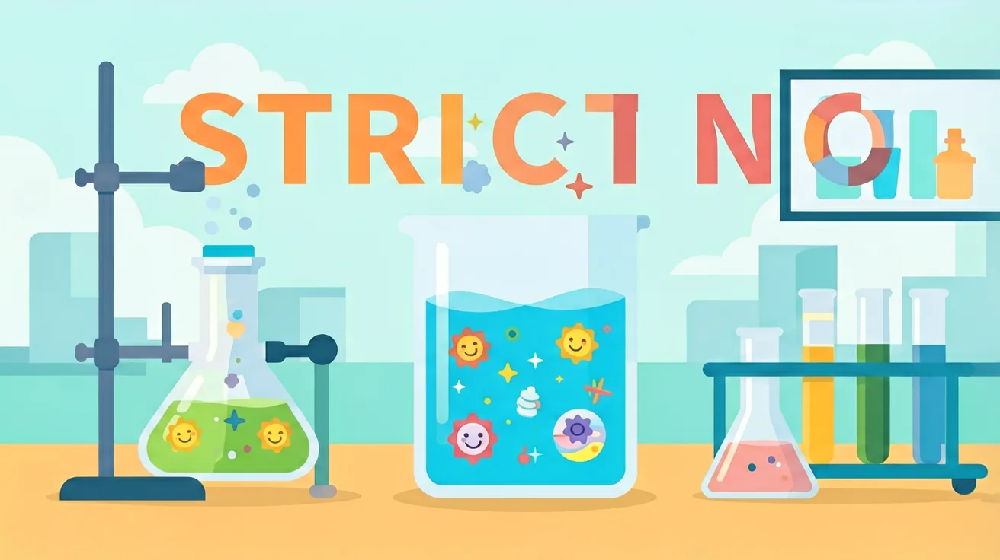

真实情境
实验室试剂瓶标签脱落事件
化学实验室中有三瓶失去标签的无色溶液，已知可能是氯化钠、碳酸钠和硫酸钠中的一种。实验员回忆起最后一次使用时，曾用硝酸银溶液检测过其中一瓶，产生了白色沉淀。现在需要设计实验方案，确认每瓶溶液的真实成分。
已有经验
学生已掌握氯离子、碳酸根离子、硫酸根离子的检验方法，了解常见沉淀的颜色特征
真正卡点
区分碳酸根和硫酸根时容易忽略分步检验的顺序，导致干扰现象误判
本课任务
设计实验方案鉴别三种溶液，并解释每步现象对应的离子判断依据
1. 什么是离子？2. 离子检验的基本原理是什么？3. 常见的离子检验方法有哪些？
1. 描述钠离子和氯离子的检验方法。2. 如何判断离子是否共存？3. 离子检验中的常见误差来源有哪些？
学生常见的误区是认为所有离子在水中都能共存。实际上，某些离子在水中会发生反应，如银离子和氯离子会生成沉淀。错因在于忽略了离子之间的反应可能性。诊断时需要强调离子共存的判断标准，包括离子性质、溶液pH值和温度等因素。
设计一个实验方案，检验某未知溶液中的离子成分。要求包括实验步骤、所需试剂和预期结果分析。通过这个任务，探究离子检验的实际应用和实验设计中的关键因素。
先独立作答，再点选项查看对错与错因。
鉴别氯化钠和碳酸钠溶液时，下列操作最合理的是
某溶液加入氯化钡产生白色沉淀，再加稀硝酸沉淀不消失，说明原溶液含有
下列离子组在溶液中能大量共存的是
检验硫酸根离子时，需先加____排除碳酸根干扰，再加____试剂确认
答案：稀盐酸,氯化钡
分步操作可避免碳酸钡沉淀的干扰
某溶液能使硝酸银溶液产生____色沉淀，加入稀硝酸后沉淀部分溶解并产生气泡，说明含有____离子
答案：白,碳酸根
碳酸银沉淀溶于酸是特征现象
关于离子检验的操作要点，正确的是
现有编号为X/Y/Z的三瓶溶液，可能含有Cl⁻、CO₃²⁻、SO₄²⁻中的一种或多种，设计实验方案并记录现象
❓ 为什么检验氯离子一定要加稀硝酸？
❓ 怎么判断溶液里有没有碳酸根离子？
❓ 铁离子和亚铁离子能同时存在吗？
学完这一课，这些问题你都能自信地回答。
✅ 需先加盐酸排除CO₃²⁻等干扰
💡 忽视钡盐也能与碳酸根生成白色沉淀
✅ 通过控制试剂加入顺序可规避干扰
💡 未掌握分步检验的优先级设计
口诀：硝酸银验氯酸护航，钡盐加酸防碳酸装
类比：就像用不同钥匙（试剂）开对应的锁（离子），还要排除假钥匙（干扰物）
And：学生已掌握常见离子颜色反应
But：面对混合溶液时不知如何排除干扰
Therefore：建立分步检验思维框架
核心思路是'干扰离子先排除，特征反应后锁定'。比如检验Cl⁻时，若溶液含CO₃²⁻会干扰（都产生白色沉淀），需先用稀HNO₃排除CO₃²⁻：取2mL待测液→滴加1mL稀HNO₃至无气泡→再加0.5mL AgNO₃溶液，白色沉淀证明Cl⁻存在。记住'酸加在前，银加在后'的口诀。
🌍 就像破案时先排除无关指纹：警察会用特殊试剂覆盖掉受害者指纹（类似加酸除CO₃²⁻），再显现嫌疑人指纹（类似Ag⁺检验Cl⁻）。
某溶液可能含SO₄²⁻和Cl⁻，检验时应先加：
And：学生能背溶解性表
But：遇到多离子组合不会动态分析
Therefore：培养'假设-验证'的决策能力
共存问题本质是'离子对'排查游戏。分三步走：①列所有可能离子对（如Ca²⁺和CO₃²⁻是一对）→②查溶解度表（CaCO₃↓）→③看浓度是否达标（0.1mol/L时Q>Ksp）。例如判断含0.01mol/L Ba²⁺和0.2mol/L SO₄²⁻的溶液是否共存：计算Q=0.01×0.2=0.002＞Ksp(BaSO₄)=1×10⁻¹⁰，必沉淀。
🌍 就像玩化学版'扫雷'：每个离子对都是地雷（沉淀），要计算浓度确定会不会'爆炸'。厨师调酱料时也会避免把醋（含H⁺）和小苏打（含HCO₃⁻）同时加，防止冒泡（CO₂↑）。
下列哪组离子在0.1mol/L时可共存：
